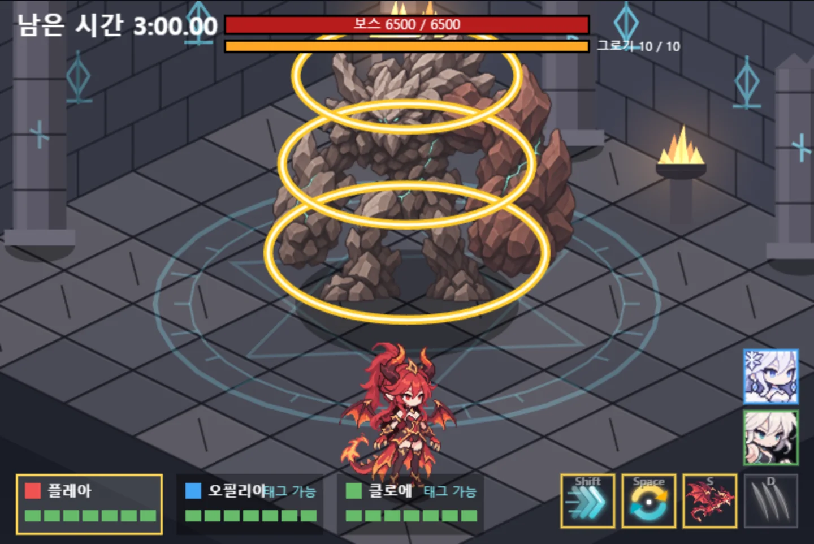
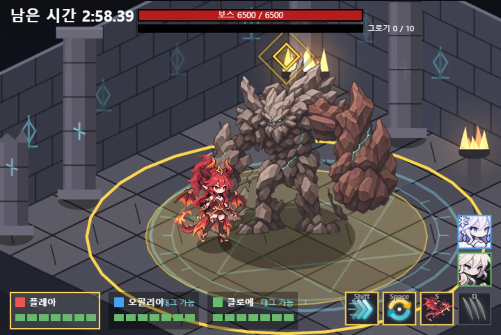
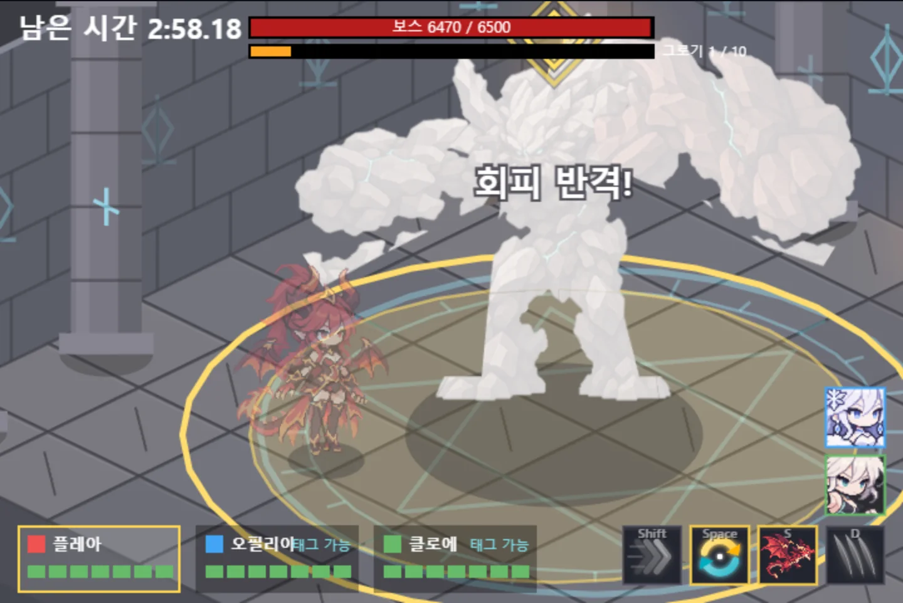

게임 2 · 큰 게임의 일부 · 원작 몬길: 스타다이브
태그 보스전
보스 공격의 전조가 빛나는 순간 회피나 태그로 반격하고, 반격을 모아 보스를 그로기에 빠뜨려 3분 안에 쓰러뜨리는 세 캐릭터 태그 보스전입니다. 노란 전조는 회피 반격과 태그 반격이 모두 되고, 붉은 전조는 회피 반격만 됩니다.
원작은 몬길: 스타다이브(개발 넷마블몬스터, 배급 넷마블)로, 보스 전투의 교체 스킬 메커니즘 한 조각을 떼어 만들었습니다. 원작의 그림과 소리는 쓰지 않았고, 캐릭터는 콘셉만 살려 새로 그렸습니다.
- 내가 한 것
- 게임의 전체 기획과 이후 수정, 자가 피드백. 피드백은 AI로 먼저 한 뒤 직접 플레이하며 다시 확인했습니다. 캐릭터 그림은 AI로 직접 만들었습니다.
- AI(Claude Code)에게 맡긴 것
- 게임 코드 작성과 수정, 브라우저 없이 규칙을 검사하는 도구와 검사 281개, 난이도를 재는 봇 시뮬레이션, 문서 정리.
PC 키보드 전용